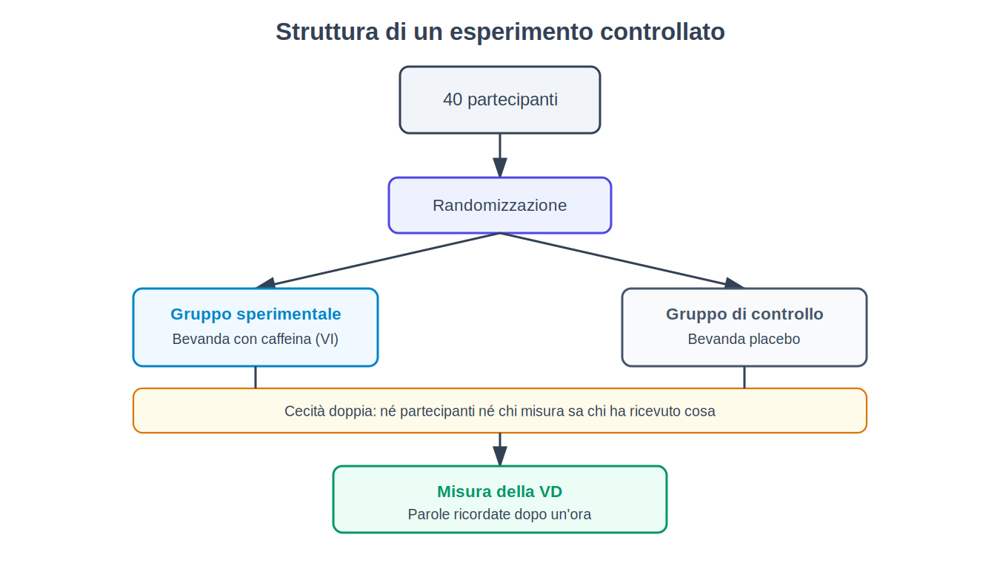
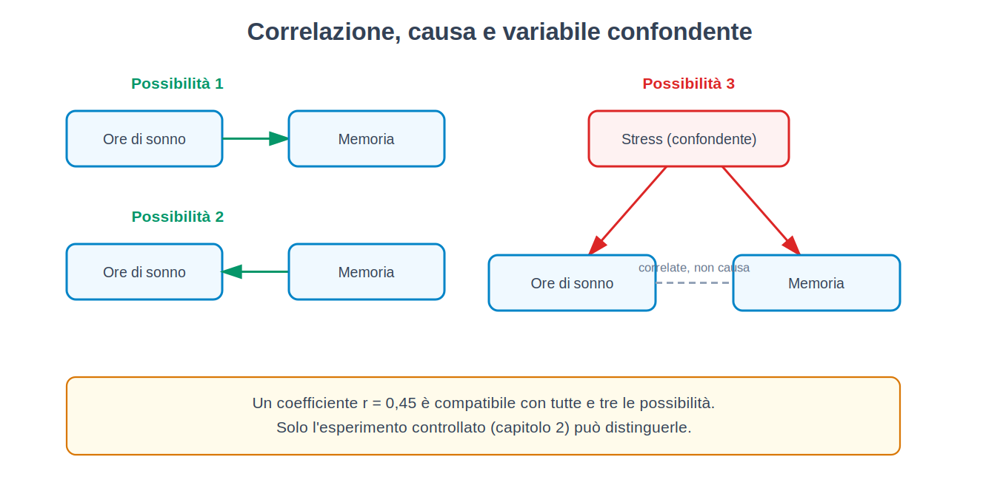
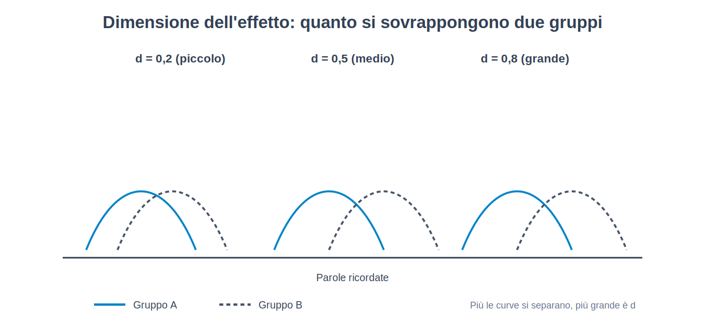
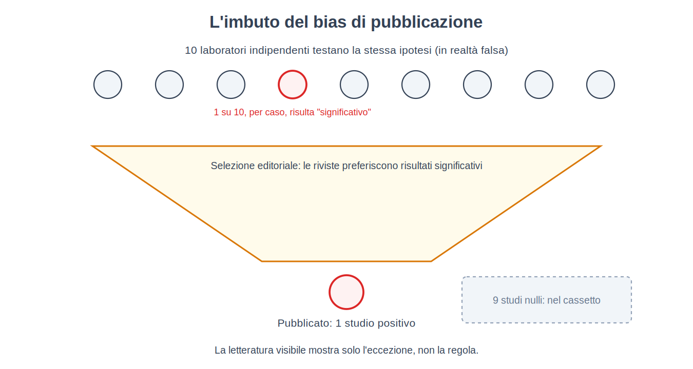

Parte I. Il problema del conoscere la mente
Capitolo 1 — Perché la mente è un oggetto difficile
[IN DUE PAROLE]
La mente non si può osservare direttamente come si osserva una reazione chimica: di quella degli altri vediamo solo gli effetti esterni, e quella nostra la conosciamo attraverso un resoconto — l'introspezione — che questo capitolo mostra essere meno affidabile di quanto sembri. Da qui nasce il problema che l'intero libro prova ad affrontare: come si fa scienza di un oggetto che nessuno strumento può fotografare.
Prova a rispondere a una domanda apparentemente semplice: perché hai scelto, tra due maglioni identici messi in vetrina, quello a destra piuttosto che quello a sinistra? Probabilmente una ragione ti viene in mente subito — il colore ti sembrava più intenso, la texture più morbida al tatto. Il problema è che, se i due maglioni erano realmente identici, quella ragione non può essere quella vera. E il punto interessante non è che tu abbia sbagliato: è che non hai avuto la sensazione di indovinare. La spiegazione ti è sembrata certa quanto vedere il colore stesso del maglione.
Questo capitolo comincia da qui perché è il primo ostacolo che chiunque voglia studiare scientificamente la mente deve affrontare: l'oggetto di studio non è disponibile all'osservazione diretta, né per chi lo studia dall'esterno né, come vedremo, per chi lo vive dall'interno.
Un oggetto che si vede solo di riflesso
Quando un chimico vuole sapere se una reazione produce calore, immerge un termometro nella soluzione. Lo strumento e l'oggetto misurato sono due cose distinte, e il numero che compare sul termometro non dipende da cosa il chimico crede o desidera. Con la mente questa separazione netta manca su entrambi i lati.
Dall'esterno, di un'altra persona non possiamo osservare la sua paura, la sua decisione, il suo ricordo: possiamo osservare solo un comportamento — un'espressione del viso, una frase pronunciata, un tempo di reazione — e da lì inferire che cosa sta succedendo "dentro". Questo passaggio dall'osservabile all'inferito è chiamato in filosofia il problema delle altre menti (problem of other minds): il fatto che l'unico accesso agli stati mentali altrui sia indiretto, mediato da segnali che potrebbero, in linea di principio, ingannare (una persona può fingere di essere triste, o non riuscire a esprimere quanto lo è realmente).
Dall'interno la situazione non è migliore, solo diversa. Ciascuno di noi ha un accesso che sembra privilegiato ai propri stati mentali — nessuno deve inferire se ha mal di testa, lo sa. Questo accesso si chiama introspezione (introspection): l'osservazione diretta, da parte di una persona, dei propri contenuti e processi mentali. Il problema dell'introspezione non è che sia inaccessibile, ma che il suo prodotto — il resoconto che ne diamo — non è garantito corrispondere al processo reale che lo ha generato. È esattamente ciò che mostra un esperimento divenuto un classico della psicologia sociale (Nisbett e Wilson, 1977).
[IL DISEGNO DELL'ESPERIMENTO]
Che cosa si voleva scoprire. Se le persone, quando spiegano perché hanno fatto una scelta, riportano realmente il processo che ha causato quella scelta, oppure costruiscono una spiegazione plausibile dopo il fatto.
Che cosa si manipolava. Venivano disposti, in fila su un banco, quattro paia di calze di nylon identiche (in una variante, quattro camicie da notte), nel corso di un'indagine sui consumatori. L'unica differenza tra i quattro era la loro posizione da sinistra a destra — una variabile che i partecipanti non avevano motivo di considerare rilevante per giudicare la qualità di un oggetto.
Che cosa si misurava. Quale dei quattro oggetti ogni partecipante indicava come il migliore, e — subito dopo — la spiegazione verbale che dava di quella scelta.
Che cosa si teneva costante. Gli oggetti erano identici: nessuna differenza di qualità reale poteva giustificare una preferenza sistematica.
Quale risultato avrebbe smentito l'ipotesi. Se le scelte si fossero distribuite in modo uniforme tra le quattro posizioni, e le spiegazioni fossero state altrettanto varie, non ci sarebbe stata alcuna base per dubitare dell'accuratezza dell'introspezione in questo caso.
Che cosa è successo. Le scelte non si sono distribuite in modo uniforme: l'oggetto più a destra è stato scelto molto più spesso degli altri — nella pubblicazione originale, quasi quattro volte più spesso di quello posto all'estrema sinistra. Nelle interviste successive, i partecipanti hanno fornito con sicurezza ragioni riguardanti la trama, il colore o la consistenza del tessuto. Nessuno ha menzionato spontaneamente la posizione. Quando i ricercatori hanno chiesto esplicitamente se la posizione potesse aver influenzato la scelta, la quasi totalità dei partecipanti lo ha negato.
Il risultato non dice che le persone mentano. Dice qualcosa di più scomodo: che il processo che genera una scelta e il processo che genera la spiegazione di quella scelta possono essere due processi diversi, e che il secondo non ha accesso privilegiato al primo — semplicemente costruisce, con materiali plausibili, una storia che si adatta al risultato già osservato. Questo fenomeno viene chiamato confabulazione (confabulation) quando il resoconto è costruito sul momento, su basi plausibili ma non corrispondenti al processo reale, ed è prodotto in buona fede, senza intenzione di ingannare.
[CONVINZIONE DIFFUSA]
"Chi meglio di me può sapere perché ho fatto una cosa?" È la convinzione più naturale che esista, e proprio per questo la più difficile da mettere in discussione. L'esperimento sulla posizione degli oggetti non dimostra che tu non sappia mai perché agisci: dimostra che la sensazione soggettiva di sapere non è una garanzia, e che questa sensazione è identica sia quando la spiegazione è corretta sia quando non lo è. Non esiste, per chi introspeziona, un segnale interno che distingua un ricordo accurato del proprio processo mentale da una ricostruzione plausibile costruita sul momento.
Perché la scienza non può fermarsi qui
Se il resoconto che le persone danno di sé non è sempre affidabile, si potrebbe pensare che la soluzione sia ignorarlo del tutto e studiare solo il comportamento osservabile. È la strada che una intera tradizione — il comportamentismo (behaviorism), di cui parleremo per intero nella Parte III — ha effettivamente scelto di percorrere, portando questa mossa fino alle sue estreme conseguenze. Ma prima di arrivare lì, questo libro prende una strada diversa: mostrare che l'introspezione inaffidabile non è la fine della possibilità di studiare scientificamente la mente, ma l'inizio del problema metodologico che il resto di questa Parte prova a risolvere. Se il resoconto verbale non basta, che altro si può misurare, e come si fa a sapere se quella misura è valida? Sono le domande dei capitoli 2 e 3.
C'è un secondo problema, distinto dal primo, che vale la pena introdurre subito: anche quando il resoconto è sincero e non confabulato, l'atto stesso di osservare la propria mente può cambiarla. Chiedere a una persona di prestare attenzione a come si sente, in genere, altera in qualche misura come si sente — un fenomeno noto in generale come reattività della misura (measurement reactivity), che ritroveremo più volte nel libro, per esempio a proposito dei questionari sull'umore (capitolo 48) e di altri studi in cui la misura altera ciò che misura. In chimica il termometro non altera la temperatura della soluzione in modo significativo; in psicologia, lo strumento di misura più comune — chiedere alla persona di riferire — può essere anche parte del fenomeno che si vuole misurare.
[MINI-CRONOLOGIA]
Il problema di come studiare la mente in modo sistematico, e non solo per via filosofica, comincia a ricevere una risposta istituzionale a fine Ottocento, con la nascita dei primi laboratori dedicati — vedremo nel capitolo 7 come l'introspezione stessa sia stata, per un certo periodo, trasformata in un metodo addestrato e standardizzato, con esiti comunque controversi.
Perché non basta "usare il buon senso"
Un'obiezione naturale a questo punto è: se l'introspezione non basta, non si può semplicemente osservare le persone con attenzione e trarne conclusioni ragionevoli, senza tutto l'apparato della sperimentazione? È una domanda legittima, e la risposta — che sviluppiamo nel capitolo 2 — è che l'osservazione non guidata da un disegno controllato è sistematicamente esposta a spiegazioni che sembrano ragionevoli e sono false, esattamente come lo sono le spiegazioni introspettive false dell'esperimento appena visto. Il buon senso non è meno soggetto a costruire storie plausibili a posteriori di quanto lo sia l'introspezione: è, in un certo senso, introspezione applicata a un campione di osservazioni invece che a un singolo evento interiore. Il metodo sperimentale nasce proprio come argine a questa tendenza.
[IL PUNTO CHIAVE DEL CAPITOLO]
• La mente non è osservabile direttamente: dall'esterno si osserva solo comportamento, da cui si inferiscono stati mentali; dall'interno si osserva tramite introspezione, il cui resoconto non è garantito corrispondere al processo reale.
• L'esperimento sulla posizione degli oggetti mostra la confabulazione: una spiegazione sbagliata può essere sentita con la stessa certezza di una corretta.
• L'atto di introspezione può modificare ciò che osserva (reattività della misura), un secondo problema distinto dalla confabulazione.
• Questi problemi non chiudono la possibilità di una scienza della mente: la aprono, ponendo la domanda del capitolo 2 — come si costruisce una misura su cui non ci si debba fidare solo del resoconto soggettivo.
Capitolo 2 — Che cos'è un esperimento
[IN DUE PAROLE]
Un esperimento è un modo di porre una domanda alla realtà così specifico che la realtà è costretta a rispondere in un modo che permette di distinguere un'ipotesi vera da una falsa. Questo capitolo costruisce da zero, con un esempio inventato e trasparente, il vocabolario — variabile indipendente, variabile dipendente, gruppo di controllo, randomizzazione, cecità — che regge il resto del libro.
Immagina di voler rispondere a una domanda innocua: bere un caffè prima di studiare aiuta a memorizzare meglio? Il modo più naturale di indagarlo, per la maggior parte delle persone, è osservare: chiedere a chi beve caffè abitualmente se ricorda di studiare meglio dopo averlo bevuto, o confrontare i propri voti nei giorni in cui lo si è bevuto rispetto a quelli in cui non lo si è bevuto. Il problema di questo approccio non è che sia stupido — è che, per quanto accurato, non può mai rispondere alla domanda che interessa realmente, perché chi beve caffè prima di studiare differisce da chi non lo beve in molti altri modi: magari studia in orari diversi, ha abitudini di sonno diverse, si sente più motivato quei giorni. Ognuna di queste differenze potrebbe essere la vera causa di un'eventuale differenza nei risultati, e l'osservazione da sola non permette di isolarle.
L'esperimento nasce esattamente per risolvere questo problema, ed è utile costruirlo passo per passo su un caso completamente inventato, proprio perché essendo inventato nessun dettaglio nasconde complicazioni reali.
La struttura minima
Immaginiamo di prendere 40 persone che devono studiare una lista di 30 parole, e di dividerle in due gruppi da 20. Al primo gruppo diamo una tazza di caffè normale prima di studiare; al secondo diamo una tazza di bevanda identica nell'aspetto e nel sapore, ma senza caffeina (una bevanda placebo, dal latino "piacerò": una sostanza priva dell'ingrediente attivo, ma indistinguibile da esso per chi la assume). Dopo un'ora, testiamo quante parole ciascuna persona ricorda.
In questo disegno minimo compaiono già gli elementi che useremo in ogni capitolo del libro:
- La variabile indipendente (independent variable) — spesso abbreviata VI — è ciò che lo sperimentatore manipola direttamente: qui, la presenza o assenza di caffeina nella bevanda. È "indipendente" perché il suo valore non dipende da nient'altro nell'esperimento: lo decide chi lo conduce, assegnandolo ai partecipanti.
- La variabile dipendente (dependent variable) — VD — è ciò che si misura come possibile effetto della manipolazione: qui, il numero di parole ricordate. Si chiama "dipendente" perché l'ipotesi in gioco è che il suo valore dipenda, almeno in parte, dalla variabile indipendente.
- Il gruppo che riceve la bevanda placebo si chiama gruppo di controllo (control group): serve da termine di paragone, per sapere quale sarebbe stato il risultato senza la manipolazione. Il gruppo che riceve la caffeina è il gruppo sperimentale.
Perché serve un gruppo di controllo, invece di dare il caffè vero a tutti e vedere quante parole ricordano? Perché senza un termine di paragone non sapremmo se un risultato di, diciamo, 18 parole ricordate su 30 sia alto o basso: potrebbe essere il numero che chiunque ricorderebbe comunque, caffeina o no.
Perché non basta dividere i gruppi a caso "a occhio"
Il passo successivo, e il più facile da sottovalutare, è come si decide chi va nel gruppo sperimentale e chi nel gruppo di controllo. Se lo sperimentatore assegnasse alla caffeina le persone che sembrano più motivate, o più giovani, o arrivate per prime, introdurrebbe una differenza sistematica tra i due gruppi che non ha niente a che fare con la caffeina — e che potrebbe da sola spiegare un'eventuale differenza nei risultati. La soluzione è la randomizzazione (randomization): assegnare ciascun partecipante a un gruppo o all'altro tramite un procedimento casuale (il lancio di una moneta, un generatore di numeri casuali), così che, in media, le altre caratteristiche delle persone — età, motivazione, quantità di sonno della notte precedente — si distribuiscano in modo simile tra i due gruppi, e la sola differenza sistematica resti quella voluta: chi ha ricevuto caffeina e chi no.
[ATTENZIONE AL SALTO]
Randomizzare non garantisce che i due gruppi siano identici in tutto — con 20 persone per gruppo, per pura casualità un gruppo potrebbe comunque contenere qualche persona più motivata dell'altro. Randomizzare garantisce qualcosa di più modesto ma sufficiente: che nessuna caratteristica venga sistematicamente instradata verso un gruppo piuttosto che l'altro, e che la probabilità di squilibri consistenti diminuisca quanto più il campione è grande. È per questo che le dimensioni del campione contano, un tema che riprendiamo nel capitolo 4 a proposito della potenza statistica.
Il problema delle aspettative: la cecità
C'è un'ultima fonte di distorsione che il disegno fin qui descritto non elimina ancora. Se i partecipanti sanno di aver bevuto caffè vero, potrebbero sentirsi più svegli e concentrarsi di più per questo solo motivo — non per un effetto biochimico della caffeina sulla memoria, ma per un effetto psicologico legato all'aspettativa di rendere meglio. Ed è per questo che la bevanda del gruppo di controllo deve essere indistinguibile da quella vera: se nessun partecipante sa in quale gruppo si trova, l'esperimento è in cecità semplice (single-blind).
Ma c'è ancora un secondo canale di distorsione: se lo sperimentatore che testa la memoria sa chi ha bevuto caffè vero, potrebbe — anche involontariamente, senza alcuna intenzione di falsare i dati — dare più tempo, incoraggiare di più, o interpretare una risposta ambigua in modo più generoso con i partecipanti da cui si aspetta un risultato migliore. Per questo, nell'esperimento ideale, anche chi somministra il test e raccoglie i dati non sa a quale gruppo appartiene ciascun partecipante: è la cecità doppia (double-blind), lo standard più rigoroso, in cui né il partecipante né lo sperimentatore a diretto contatto con lui conoscono l'assegnazione ai gruppi finché i dati non sono raccolti.

[QUESTIONE CONTROVERSA]
La cecità doppia è più facile da ottenere per un farmaco (una pillola è indistinguibile da un'altra) che per molti interventi psicologici: è difficile rendere in cieco un partecipante rispetto al fatto di aver ricevuto, per esempio, una seduta di terapia invece di nessun trattamento — lo sa per forza. Questo limite riguarderà direttamente la valutazione degli studi clinici, affrontata nel capitolo 76: gran parte della ricerca sugli interventi psicologici deve convivere con una cecità solo parziale, e ne va tenuto conto nell'interpretare i risultati.
Che cosa succede se il risultato è quello previsto
Supponiamo che il gruppo con la caffeina ricordi in media più parole del gruppo di controllo. Questo risultato, da solo, permette di dire che la caffeina causa un miglioramento della memoria in questo compito? Sì, e questa è la caratteristica che rende l'esperimento diverso da qualsiasi osservazione, per quanto accurata: poiché i due gruppi sono stati resi equivalenti in media (tramite randomizzazione) tranne che nella variabile manipolata, e poiché la cecità toglie di mezzo l'effetto delle aspettative, l'unica spiegazione plausibile rimasta per una differenza nei risultati è la variabile indipendente stessa. È questo — e non un'intuizione più forte o un campione più numeroso — a dare all'esperimento controllato la capacità, che nessun altro disegno possiede allo stesso grado, di sostenere affermazioni causali. Torneremo su un'eccezione importante a questa capacità nel capitolo 4, quando parleremo di correlazione e causa in disegni non sperimentali, e nel capitolo 6, quando vedremo situazioni in cui un vero esperimento non è possibile o non è etico.
[IL PUNTO CHIAVE DEL CAPITOLO]
• Un esperimento manipola una variabile indipendente e misura l'effetto su una variabile dipendente, mantenendo tutto il resto il più possibile costante.
• Il gruppo di controllo fornisce il termine di paragone senza il quale un risultato non si può interpretare.
• La randomizzazione distribuisce le altre differenze tra i partecipanti in modo casuale tra i gruppi, isolando la variabile di interesse.
• La cecità (semplice o doppia) elimina la possibilità che le aspettative di partecipanti o sperimentatori, e non la manipolazione stessa, producano il risultato osservato.
• Solo quando tutti questi elementi sono presenti insieme, un esperimento può sostenere un'affermazione causale — non una correlazione, ma una causa.
Capitolo 3 — Misurare l'invisibile: i costrutti
[IN DUE PAROLE]
"Intelligenza", "ansia", "motivazione" non sono cose che si possano toccare: sono costrutti, categorie che la psicologia inventa per organizzare pattern di comportamento, e che vanno poi trasformate in procedure di misura concrete. Questo capitolo mostra perché quel passaggio — dal concetto astratto al numero misurato — è più impegnativo di quanto sembri, e come si valuta se una misura è buona.
"Quanto sei intelligente?" è una domanda che sembra avere senso solo perché siamo abituati a sentirla. Ma prova a chiederti: l'intelligenza è una cosa che esiste indipendentemente da come la misuriamo, come la lunghezza di un tavolo esiste indipendentemente dal metro che si usa per misurarla? O è, almeno in parte, definita dal modo in cui scegliamo di misurarla? La risposta a questa domanda cambia radicalmente che cosa significhi dire che un test è "accurato".
Costrutti e operazionalizzazione
In psicologia si chiama costrutto (construct) un'entità teorica, non osservabile direttamente, introdotta per spiegare pattern regolari di comportamento — l'intelligenza, l'ansia, la motivazione, l'attaccamento sono tutti costrutti. Un costrutto non è né vero né falso in sé: è utile o inutile a seconda di quanto aiuta a prevedere e organizzare osservazioni. Per poterlo studiare, però, bisogna tradurlo in una procedura concreta e ripetibile di misura — un processo chiamato operazionalizzazione (operationalization): la definizione di un costrutto attraverso le operazioni specifiche usate per misurarlo (per esempio, "intelligenza" operazionalizzata come "punteggio ottenuto a un certo test in un certo tempo").
Il punto delicato è che la stessa parola quotidiana — "intelligenza", "stress", "felicità" — può essere operazionalizzata in modi diversi e non equivalenti, e la scelta di operazionalizzazione non è neutra: cambia che cosa, di fatto, si sta misurando. Due ricercatori che dicono entrambi di misurare "l'ansia" potrebbero misurare in realtà due cose parzialmente diverse — uno il battito cardiaco durante un compito stressante, l'altro le risposte a un questionario sui pensieri ansiosi — e trovare risultati diversi non perché uno sbaglia, ma perché stanno guardando aspetti diversi dello stesso costrutto.
[CONVINZIONE DIFFUSA]
"Se un test misura l'intelligenza, allora l'intelligenza è quello che il test misura" è una battuta che circola da tempo negli ambienti accademici, spesso presentata come una scorciatoia definitoria. In realtà nasconde un errore: rovescia il problema invece di risolverlo. Il compito della psicologia non è accettare qualunque procedura di misura come definizione automaticamente corretta del costrutto, ma verificare se quella procedura cattura realmente il costrutto che dice di misurare — ed è esattamente il problema della validità, il prossimo argomento di questo capitolo.
Le forme principali di validità
Dire che una misura è valida (valid) significa dire che misura effettivamente il costrutto che dichiara di misurare, e non qualcos'altro. Non è una proprietà unica: la psicologia distingue almeno tre forme principali di validità (di costrutto, interna, esterna), con la validità ecologica come caso particolare della esterna; ciascuna può essere presente senza le altre.
La validità di costrutto (construct validity) riguarda se la misura cattura realmente il costrutto teorico di interesse. Si valuta in modo indiretto, verificando se il punteggio si comporta come la teoria prevede che debba comportarsi: un test di ansia dovrebbe, per esempio, correlare con altre misure di ansia (validità convergente) e correlare poco con misure di costrutti distinti, come la memoria (validità discriminante).
La validità interna (internal validity), già incontrata implicitamente nel capitolo 2, riguarda se un dato disegno di ricerca permette realmente di concludere che la variabile indipendente ha causato il cambiamento osservato nella variabile dipendente, escludendo altre spiegazioni.
La validità esterna (external validity) riguarda se un risultato ottenuto in un certo contesto (un certo campione, un certo laboratorio, una certa cultura) si generalizza ad altri contesti, altre persone, altri momenti.
La validità ecologica (ecological validity), un caso particolare di validità esterna, riguarda specificamente se un risultato ottenuto in condizioni di laboratorio, spesso artificiali, si applica anche a situazioni di vita reale — una domanda che tornerà spesso, per esempio a proposito degli esperimenti di laboratorio sulla memoria (capitolo 34) e sull'obbedienza (capitolo 68).
Un esperimento può avere alta validità interna (nel contesto controllato in cui è stato condotto, il risultato è solido) e bassa validità esterna (non si generalizza fuori da quel contesto specifico): sono dimensioni indipendenti, e un buon disegno di ricerca deve dichiarare esplicitamente su quale di esse sta facendo un'affermazione.
Attendibilità: la validità non basta
Un secondo requisito, distinto dalla validità, è l'attendibilità (reliability): la coerenza di una misura, cioè quanto produce risultati simili quando ripetuta nelle stesse condizioni. Una bilancia che segna un peso diverso ogni volta che ci sali sopra, pur restando il tuo peso reale identico, non è attendibile — e di conseguenza non può nemmeno essere valida, perché un numero che cambia a caso non può misurare accuratamente niente. L'attendibilità è quindi una condizione necessaria ma non sufficiente per la validità: una bilancia scarica sempre 10 kg in più del peso reale è perfettamente attendibile (dà sempre lo stesso numero) ma non valida (quel numero non è il peso corretto).
Si distinguono in genere due tipi di attendibilità: l'attendibilità test-retest (test-retest reliability), la coerenza dei punteggi della stessa persona misurata in due momenti diversi ravvicinati nel tempo, quando non ci si aspetta un cambiamento reale nel costrutto; e la coerenza interna (internal consistency), quanto le diverse domande di uno stesso questionario, pensate per misurare lo stesso costrutto, tendono a dare risposte tra loro coerenti nella stessa persona.
[IL DISEGNO DELL'ESPERIMENTO]
Come si stima concretamente l'attendibilità test-retest. Si somministra lo stesso test alle stesse persone in due occasioni distanziate (per esempio due settimane), abbastanza vicine da escludere un cambiamento reale nel tratto misurato, ma abbastanza lontane da ridurre l'effetto del semplice ricordo delle risposte date la prima volta. Si calcola poi la correlazione tra i punteggi ottenuti nelle due occasioni (il coefficiente di correlazione è introdotto per intero nel capitolo 4): più il valore si avvicina a 1, più la misura è stabile nel tempo. Un valore basso non dice necessariamente che il test è negativo — potrebbe anche indicare che il costrutto misurato cambia naturalmente in fretta — ma impone di distinguere le due possibilità prima di fidarsi del punteggio come tratto stabile della persona.
Perché "misurare l'intelligenza" è un'affermazione impegnativa
Torniamo alla domanda di apertura. Dire che un test misura "l'intelligenza" implica, tacitamente, tre affermazioni distinte, ciascuna verificabile e ciascuna, in linea di principio, falsificabile: che il punteggio sia attendibile (stabile se ripetuto); che correli con altre misure indipendenti che la teoria collega all'intelligenza (per esempio risultati scolastici, capacità di risolvere problemi nuovi); e che non sia semplicemente il riflesso di qualcos'altro — per esempio la familiarità culturale con il tipo di domande poste, o la velocità con cui si è abituati a lavorare sotto il cronometro. Come vedremo nel capitolo 64, ciascuna di queste tre affermazioni è stata oggetto di ricerca seria, e nessuna delle tre è scontata quanto l'uso quotidiano della parola "intelligenza" lascerebbe credere.
[IL PUNTO CHIAVE DEL CAPITOLO]
• Un costrutto è un'entità teorica non osservabile direttamente; per studiarlo va tradotto in una procedura di misura concreta tramite l'operazionalizzazione.
• La validità (di costrutto, interna, esterna, ecologica) riguarda se una misura cattura realmente ciò che dichiara di misurare; sono dimensioni distinte e indipendenti tra loro.
• L'attendibilità (test-retest, coerenza interna) riguarda la coerenza della misura, ed è necessaria ma non sufficiente per la validità.
• Dire che un test "misura" un costrutto complesso come l'intelligenza è un'affermazione empiricamente verificabile, non una definizione da dare per scontata.
Capitolo 4 — La statistica minima indispensabile
[IN DUE PAROLE]
Questo capitolo introduce, da zero e con esempi numerici concreti, gli strumenti statistici che il resto del libro userà con naturalezza: media e variabilità, correlazione (e perché non implica causa), dimensione dell'effetto, valore-p e che cosa non significa, potenza statistica, intervallo di confidenza. Non serve un solo simbolo che non venga spiegato qui.
I numeri, da soli, non dicono nulla: due gruppi che ricordano in media 18 e 20 parole su 30 (esempio del capitolo 2) sono "realmente" diversi, o quella differenza di due parole potrebbe essere comparsa per puro caso, con un altro campione di persone? Rispondere a questa domanda è il compito della statistica, e per farlo servono pochi strumenti, spiegati uno alla volta.
Descrivere un gruppo di numeri: media e variabilità
La media (mean) di un insieme di numeri è la loro somma divisa per quanti sono — il modo più comune di riassumere "il valore tipico" di un gruppo. Ma la sola media nasconde un'informazione importante: quanto i valori individuali si discostano da essa. Due gruppi possono avere la stessa media di parole ricordate, ma in uno tutti ricordano un numero simile di parole, mentre nell'altro alcuni ne ricordano moltissime e altri pochissime. Questa dispersione si misura con la deviazione standard (standard deviation), indicata con il simbolo DS o, nella notazione internazionale, SD: una misura di quanto, in media, i singoli valori si allontanano dalla media del gruppo.
[FORMULA]
DS = √( Σ(xᵢ − x̄)² / (n − 1) )
Dove:
• xᵢ — il valore di ciascuna osservazione (per esempio, il numero di parole ricordate dalla persona i-esima)
• x̄ — la media del gruppo
• n — il numero di osservazioni nel gruppo
• Σ — il simbolo di sommatoria: somma il termine che segue per tutte le osservazioni, da 1 a n
Cosa significa in parole semplici: per ogni persona, si calcola quanto il suo punteggio si discosta dalla media del gruppo (xᵢ − x̄); si eleva al quadrato questo scarto (per eliminare i segni negativi ed evitare che gli scarti positivi e negativi si annullino a vicenda nella somma); si sommano tutti gli scarti al quadrato; si divide per il numero di osservazioni meno uno; infine si estrae la radice quadrata per tornare all'unità di misura originale (parole, non "parole al quadrato").
Esempio di calcolo: in un gruppo di 4 persone che ricordano rispettivamente 16, 18, 20, 22 parole, la media è 19. Gli scarti sono −3, −1, 1, 3; al quadrato: 9, 1, 1, 9; la somma è 20; divisa per (4−1)=3 dà 6,67; la radice quadrata è circa 2,58. La deviazione standard di questo gruppo è quindi di circa 2,58 parole.
Correlazione: quando due cose variano insieme
Molte domande in psicologia non riguardano un esperimento controllato, ma se due variabili misurate così come si presentano nella realtà — senza manipolarne nessuna — tendono a variare insieme. Per esempio: le persone che dormono di più tendono anche a ricordare meglio? Questa relazione si misura con il coefficiente di correlazione (correlation coefficient), indicato con la lettera r, un numero compreso tra −1 e +1 che descrive quanto strettamente due variabili variano insieme, e in che direzione.
[FORMULA]
r = Σ[(xᵢ − x̄)(yᵢ − ȳ)] / √[Σ(xᵢ − x̄)² · Σ(yᵢ − ȳ)²]
Dove:
• xᵢ, yᵢ — i valori delle due variabili per ciascuna persona (per esempio, ore di sonno e parole ricordate)
• x̄, ȳ — le medie rispettivamente della variabile x e della variabile y
• Σ — sommatoria su tutte le persone del campione
Cosa significa in parole semplici: il numeratore diventa grande e positivo quando le persone che stanno sopra la media in una variabile stanno anche sopra la media nell'altra (e viceversa per chi sta sotto); il denominatore serve solo a "normalizzare" il risultato, così che r cada sempre tra −1 e +1, indipendentemente dall'unità di misura delle variabili originali. Un r vicino a +1 indica che le due variabili crescono insieme in modo quasi perfettamente lineare; un r vicino a −1 indica che quando una cresce l'altra tende a calare; un r vicino a 0 indica assenza di relazione lineare.
Esempio di calcolo: cinque persone dormono 5, 6, 7, 8 e 9 ore e ricordano rispettivamente 14, 18, 16, 22 e 20 parole. Le medie sono 7 ore e 18 parole. Gli scarti dalla media sono −2, −1, 0, +1, +2 per il sonno e −4, 0, −2, +4, +2 per le parole; i loro prodotti sono 8, 0, 0, 4, 4, con somma 16. La somma dei quadrati degli scarti è 10 per il sonno e 40 per le parole. Quindi r = 16 / √(10 · 40) = 16 / 20 = 0,80 — una relazione positiva forte, ma non perfetta.
[ATTENZIONE AL SALTO]
Trovare che r = 0,45 tra ore di sonno e parole ricordate non autorizza a concludere che dormire di più causi una memoria migliore. Potrebbe essere vero il contrario (chi ha una memoria più efficiente magari si sente meno affaticato e dorme meglio), oppure entrambe le variabili potrebbero dipendere da una terza causa comune non misurata — per esempio un livello generale di stress, che riduce sia il sonno sia la capacità di concentrarsi durante lo studio. Questa terza causa nascosta si chiama variabile confondente (confounding variable). È il motivo per cui, come visto nel capitolo 2, solo l'esperimento controllato — non la correlazione — può sostenere un'affermazione causale: la correlazione da sola resta compatibile con più spiegazioni causali contraddittorie tra loro.

Il valore-p: una domanda precisa, spesso fraintesa
Torniamo alla domanda di apertura: la differenza di due parole ricordate tra il gruppo caffeina e il gruppo placebo (capitolo 2) potrebbe essere comparsa per puro caso? Il valore-p (p-value) prova a rispondere a una versione precisa di questa domanda: supponendo che, nella realtà, la caffeina non abbia alcun effetto (questa supposizione di partenza si chiama ipotesi nulla, null hypothesis), qual è la probabilità di osservare, per puro effetto del caso nel campionamento, una differenza grande almeno quanto quella osservata (o più grande)?
Un valore-p basso (convenzionalmente, sotto 0,05, cioè il 5%) significa che un risultato così marcato sarebbe raro se l'ipotesi nulla fosse vera — e per convenzione, quando questo accade, si dice che il risultato è statisticamente significativo (statistically significant), e si tende a scartare l'ipotesi nulla in favore dell'ipotesi che la manipolazione abbia avuto un effetto reale.
[CONVINZIONE DIFFUSA]
"Un p-value di 0,03 significa che c'è il 97% di probabilità che l'effetto sia reale." È una delle interpretazioni più diffuse del valore-p, ed è sbagliata. Il valore-p non dice nulla sulla probabilità che l'ipotesi (che l'effetto sia reale) sia vera: dice solo quanto sarebbero rari, se l'ipotesi nulla fosse vera, dati estremi come quelli osservati o più estremi. Sono due domande diverse — la prima riguarda la probabilità dell'ipotesi dati i dati, la seconda la probabilità dei dati data l'ipotesi nulla — e confonderle è uno degli errori più comuni, e più conseguenti, nella lettura della ricerca psicologica. Un valore-p basso non misura nemmeno quanto un effetto sia grande o importante: misura solo quanto sarebbe improbabile ottenerlo per caso puro, il che è una cosa diversa, come mostra il prossimo paragrafo.
Dimensione dell'effetto: quanto, non solo se
Un risultato può essere statisticamente significativo (improbabile per puro caso) ed essere allo stesso tempo troppo piccolo per avere qualunque rilevanza pratica — questo succede tipicamente con campioni molto grandi, dove anche differenze minuscole diventano difficili da attribuire al caso. Per questo, accanto al valore-p, si riporta sempre la dimensione dell'effetto (effect size): una misura di quanto è grande una differenza o una relazione, indipendentemente da quante persone sono state misurate. Una delle misure più comuni per confrontare due gruppi è la d di Cohen.
[FORMULA]
d = (x̄₁ − x̄₂) / DS_comune
Dove:
• x̄₁, x̄₂ — le medie dei due gruppi a confronto (per esempio, gruppo caffeina e gruppo placebo)
• DS_comune — una media ponderata delle deviazioni standard dei due gruppi, che riassume la variabilità interna di entrambi
Cosa significa in parole semplici: d esprime la differenza tra le due medie non in unità originali (parole), ma in unità di deviazione standard — cioè, quante "tacche" di dispersione tipica separano le due medie. Per convenzione approssimativa, un d intorno a 0,2 è considerato un effetto piccolo, intorno a 0,5 medio, intorno a 0,8 o oltre grande — ma questi valori di riferimento vanno sempre letti nel contesto specifico del fenomeno studiato, non come soglie assolute.
Esempio di calcolo: se il gruppo caffeina ricorda in media 20 parole e il gruppo placebo 18, con una deviazione standard comune di 4 parole, allora d = (20 − 18) / 4 = 0,5 — un effetto di dimensione media.

Potenza statistica: la capacità di trovare un effetto che c'è realmente
Un ultimo concetto, meno intuitivo ma essenziale per capire perché certi esperimenti falliscono nel trovare effetti reali, è la potenza statistica (statistical power): la probabilità che uno studio, se l'effetto che cerca esiste realmente e ha una certa dimensione, riesca a rilevarlo come statisticamente significativo. Uno studio con pochi partecipanti ha in genere bassa potenza: anche se l'effetto è reale, il campione potrebbe non essere abbastanza grande da distinguerlo in modo affidabile dal rumore del caso, e lo studio conclude — erroneamente — che non c'è alcun effetto. Questo tipo di errore, mancare un effetto che esiste realmente, si chiama errore di secondo tipo (Type II error), distinto dall'errore di primo tipo (Type I error): concludere che un effetto esiste quando in realtà non c'è (cioè, in pratica, ottenere un valore-p basso per puro caso).
La potenza dipende da quattro fattori: la dimensione del campione (più persone, più potenza), la dimensione reale dell'effetto che si sta cercando (effetti grandi sono più facili da rilevare di effetti piccoli), la soglia di significatività scelta e la variabilità dei dati (misure più rumorose, meno potenza). Uno studio con pochi partecipanti che cerca un effetto piccolo è quasi condannato, prima ancora di cominciare, a non trovarlo anche se esiste — un problema che ritroveremo al centro del capitolo 5, quando parleremo di come la scarsa potenza abbia contribuito alla crisi di replicabilità.
Intervallo di confidenza: quanto siamo incerti sulla stima
Un'ultima cifra, sempre più spesso riportata accanto al valore-p e alla dimensione dell'effetto, è l'intervallo di confidenza (confidence interval), tipicamente al 95%: un intervallo di valori plausibili per la vera dimensione dell'effetto nella popolazione, calcolato in modo che, ripetendo lo studio molte volte con campioni diversi, il 95% degli intervalli così calcolati conterrebbe il valore vero. Un intervallo molto ampio (per esempio, un effetto stimato che potrebbe essere ovunque tra quasi zero e molto grande) segnala una stima poco precisa, anche quando il punto centrale sembra promettente — un'informazione che il solo valore-p, da solo, non trasmette.
[IL PUNTO CHIAVE DEL CAPITOLO]
• Media e deviazione standard riassumono, rispettivamente, il valore tipico e la dispersione di un gruppo di dati.
• La correlazione (r) misura se e quanto due variabili variano insieme, ma non permette da sola conclusioni causali: resta sempre aperta la possibilità di una variabile confondente.
• Il valore-p indica quanto sarebbe raro un risultato se l'ipotesi nulla fosse vera — non la probabilità che l'ipotesi di interesse sia vera, un fraintendimento tra i più comuni e conseguenti.
• La dimensione dell'effetto (per esempio la d di Cohen) misura quanto è grande una differenza, indipendentemente dalla significatività statistica.
• La potenza statistica è la capacità di uno studio di rilevare un effetto reale; una potenza bassa produce falsi negativi (errore di secondo tipo).
• L'intervallo di confidenza comunica quanto è precisa una stima, un'informazione complementare al valore-p.
Capitolo 5 — Come un risultato può essere falso pur essendo vero
[IN DUE PAROLE]
Uno studio può essere condotto onestamente, superare la soglia di significatività, essere pubblicato su una rivista prestigiosa — ed essere comunque un falso positivo. Questo capitolo spiega come questo può accadere sistematicamente, non per frode, ma per il modo in cui la ricerca scientifica è stata storicamente incentivata, e presenta il tentativo più grande mai condotto di misurare quanto spesso i risultati della psicologia si ripetano.
Se hai seguito il capitolo 4, potresti pensare che un valore-p sotto 0,05, ottenuto in un esperimento ben disegnato, sia una garanzia sufficientemente solida. Questo capitolo mostra perché non lo è sempre, anche quando nessuno ha barato: il problema nasce da come vengono prese, spesso senza nemmeno rendersene conto, decisioni su come analizzare i dati.
Il problema dei tanti modi di guardare gli stessi dati
Immagina di aver misurato, nell'esperimento sulla caffeina del capitolo 2, non solo il numero di parole ricordate dopo un'ora, ma anche dopo due ore, e non solo il numero totale di parole, ma anche quante ne sono state ricordate nell'ordine corretto, e magari anche la velocità con cui i partecipanti le hanno scritte. Con quattro o cinque misure diverse invece di una sola, e magari qualche modo alternativo di escludere o includere partecipanti "anomali", il numero di analisi possibili sugli stessi dati cresce molto rapidamente. Il problema è che, per pura definizione del valore-p, se si eseguono venti analisi diverse su dati che in realtà non contengono alcun effetto, ci si aspetta comunque, in media, che circa una di queste venti risulti significativa per puro caso (dato che la soglia convenzionale è fissata al 5%, cioè 1 su 20).
Questa libertà — spesso esercitata in buona fede, semplicemente provando approcci diversi finché uno "funziona" — si chiama gradi di libertà del ricercatore (researcher degrees of freedom): l'insieme delle scelte, apparentemente ragionevoli prese singolarmente, che un ricercatore può fare durante la raccolta e l'analisi dei dati (quali misure riportare, quando fermare la raccolta dati, quali partecipanti escludere, quali analisi statistiche usare), ciascuna delle quali aumenta la probabilità di imbattersi, prima o poi, in un risultato significativo per puro caso. Quando questa libertà viene sfruttata — anche inconsapevolmente — per cercare un risultato significativo dopo aver visto i dati, si parla di pesca dei dati (p-hacking): la pratica di provare diverse analisi finché una risulta significativa, senza dichiarare le altre tentate.
[ATTENZIONE AL SALTO]
La pesca dei dati non richiede intenzione fraudolenta. Un ricercatore che, in buona fede, prova ad analizzare i dati in tre modi diversi perché il primo "non ha funzionato", per poi riportare solo il terzo come se fosse stato l'unico previsto, ha comunque inflazionato la probabilità di un falso positivo — anche se ogni singola scelta, presa isolatamente, gli sembrava ragionevole.
Il problema di ciò che non viene mai pubblicato
Un secondo meccanismo, indipendente dal primo, riguarda che cosa arriva effettivamente a essere pubblicato. Per lungo tempo, le riviste scientifiche hanno preferito pubblicare risultati positivi (un effetto trovato) piuttosto che risultati nulli (nessun effetto trovato) — uno studio che conferma un'ipotesi interessante è percepito come più "importante" di uno che non trova nulla. Questa tendenza sistematica si chiama bias di pubblicazione (publication bias): la tendenza delle riviste a pubblicare in modo sproporzionato risultati statisticamente significativi rispetto a quelli nulli, a parità di qualità del disegno.
L'effetto cumulativo è insidioso: se dieci laboratori indipendenti testano la stessa ipotesi falsa, ciascuno ha 1 probabilità su 20 di ottenere per puro caso un risultato significativo, e la probabilità che almeno uno dei dieci lo ottenga è di circa il 40% (1 meno 0,95 elevato alla decima). Se solo quel laboratorio pubblica, mentre i nove che non hanno trovato nulla lasciano lo studio in un cassetto, la letteratura scientifica visibile mostrerà un solo studio, positivo, senza alcuna traccia dei nove tentativi falliti che lo contraddicono.

[IL DISEGNO DELL'ESPERIMENTO]
Il progetto. Reproducibility Project: Psychology, condotto dall'Open Science Collaboration (2015).
Che cosa si voleva scoprire. Quanto spesso i risultati pubblicati nelle principali riviste di psicologia si ripetono quando lo stesso esperimento viene condotto di nuovo, da un altro laboratorio, con lo stesso protocollo.
Che cosa si è fatto. Un consorzio di circa 270 ricercatori ha selezionato 100 studi pubblicati in tre riviste di psicologia di alto profilo, e ha tentato di replicare ciascuno seguendo, quando possibile, lo stesso protocollo sperimentale dello studio originale — spesso con la collaborazione degli autori originali stessi, per assicurarsi che la procedura fosse realmente equivalente.
Che cosa si misurava. Se, nella replica, l'effetto risultava ancora statisticamente significativo nella stessa direzione, e quanto grande fosse la dimensione dell'effetto trovata nella replica rispetto a quella dello studio originale.
Quale risultato avrebbe smentito la preoccupazione sulla replicabilità. Se la grande maggioranza delle repliche avesse confermato gli studi originali con dimensioni dell'effetto comparabili, la preoccupazione sulla fragilità sistematica dei risultati pubblicati sarebbe stata ridimensionata.
Che cosa è successo. Delle 97 repliche di studi che nell'originale avevano riportato un effetto significativo, solo il 36% ha ottenuto di nuovo un risultato statisticamente significativo. Nel complesso delle repliche, inoltre, la dimensione dell'effetto misurata era in media circa la metà di quella riportata nello studio originale (un coefficiente di correlazione medio di 0,20 contro 0,40). Il tasso di successo variava molto per area: più alto per la psicologia cognitiva (circa la metà degli studi replicati), più basso per la psicologia sociale (circa un quarto).
Un progetto successivo (Many Labs 2, pubblicato nel 2018, parte di una serie di progetti Many Labs iniziata nel 2014), che ha coinvolto oltre 60 laboratori in tutto il mondo nel tentativo di replicare 28 effetti tra classici e recenti, ha trovato un pattern per certi versi ancora più informativo: quando un effetto replicava, tendeva a replicare in modo coerente nella maggior parte dei laboratori coinvolti; quando falliva, falliva in modo altrettanto coerente ovunque. Questo suggerisce che il problema, in molti casi, non è che l'effetto dipenda in modo sottile dal contesto culturale o dal laboratorio specifico — un'ipotesi spesso invocata per spiegare i fallimenti di replica — ma più semplicemente che l'effetto originale, in quei casi, non fosse mai stato così solido come pubblicato.
[REGGE ANCORA?]
Il progetto di replicazione qui descritto (comunemente indicato con la sigla OSC, dal nome del consorzio che lo ha condotto) resta, a distanza di anni, il punto di riferimento quantitativo più citato sulla crisi di replicabilità in psicologia, e le sue cifre principali sono state in larga parte confermate da ulteriori progetti su larga scala, anche se alcuni autori ne hanno discusso l'interpretazione (in particolare quanto del 36% dipenda da differenze tra le condizioni di replica e quelle originali). Resta invece dibattuto quanto peso attribuire, caso per caso, alle diverse cause possibili di un fallimento di replica: pesca dei dati nello studio originale, potenza statistica insufficiente nella replica, o differenze reali di contesto tra lo studio originale e la sua ripetizione. Distinguere queste possibilità richiede, il più delle volte, un'analisi caso per caso — non esiste una diagnosi automatica applicabile a tutti gli studi falliti allo stesso modo.
Un problema di campione, non solo di analisi
Un ultimo fattore, distinto dai precedenti ma che li aggrava, riguarda chi viene tipicamente studiato. Gran parte della ricerca psicologica storica è stata condotta su studenti universitari di paesi occidentali, ricchi, istruiti e industrializzati — un campione riassunto nell'acronimo WEIRD (Western, Educated, Industrialized, Rich, Democratic), che in inglese significa anche, non a caso, "strano". Un risultato ottenuto quasi esclusivamente su questo tipo di campione può non generalizzarsi (problema di validità esterna, capitolo 3) a popolazioni con abitudini cognitive, sociali o educative diverse — un limite silenzioso che si aggiunge, senza sostituirla, alla fragilità statistica appena descritta.
Le contromisure adottate dalla disciplina
La risposta della psicologia a questi problemi, negli ultimi quindici anni, si è concentrata su cambiamenti di pratica concreti, che ritroveremo più volte nel libro. La preregistrazione (preregistration) consiste nel dichiarare pubblicamente, prima di raccogliere i dati, quali ipotesi si stanno testando e quali analisi verranno condotte — un impegno che riduce drasticamente lo spazio per la pesca dei dati descritta sopra, perché ogni scostamento dal piano dichiarato diventa visibile. Una forma ancora più stringente sono i rapporti registrati (registered reports): un formato editoriale in cui una rivista si impegna a pubblicare uno studio in base alla qualità del suo disegno, valutata prima ancora che i dati siano raccolti — eliminando così, alla radice, il bias di pubblicazione basato sul risultato, perché la decisione di pubblicare non dipende più dall'esito.
[IL PUNTO CHIAVE DEL CAPITOLO]
• I gradi di libertà del ricercatore e la pesca dei dati possono produrre risultati significativi per puro caso, anche senza alcuna intenzione fraudolenta.
• Il bias di pubblicazione distorce sistematicamente la letteratura visibile verso i risultati positivi, nascondendo i tentativi falliti.
• Il grande progetto di replicazione qui descritto ha trovato che solo il 36% di 97 risultati originariamente significativi si è replicato, con dimensioni dell'effetto in media circa dimezzate nel complesso delle repliche.
• Campioni composti quasi solo da popolazioni WEIRD aggiungono un problema distinto di generalizzabilità.
• Preregistrazione e rapporti registrati sono le contromisure principali adottate dalla disciplina, e ne terremo conto capitolo per capitolo con il box [REGGE ANCORA?].
Capitolo 6 — Gli altri modi di sapere
[IN DUE PAROLE]
L'esperimento controllato del capitolo 2 non è sempre possibile: a volte per ragioni etiche (non si può assegnare a caso un trauma), a volte per ragioni pratiche (non si può randomizzare l'età di una persona). Questo capitolo presenta gli altri disegni di ricerca — longitudinali, su gemelli, su caso singolo, meta-analisi, modelli computazionali — che la psicologia usa quando l'esperimento non è un'opzione, e i limiti specifici di ciascuno.
Non tutte le domande interessanti si possono racchiudere in un esperimento come quello del capitolo 2. Nessun comitato etico permetterebbe di assegnare a caso, a un gruppo di bambini, un'infanzia segnata dalla povertà per vedere l'effetto sullo sviluppo cognitivo; e nessuno sperimentatore può randomizzare se una persona ha 20 o 70 anni. Eppure la psicologia dello sviluppo (Parte IX) e la psicologia dell'invecchiamento producono conoscenza solida su domande come queste. Come?
Studi longitudinali e trasversali
Uno studio longitudinale (longitudinal study) segue lo stesso gruppo di persone nel tempo, misurandole ripetutamente a distanza di mesi o anni, per osservare come cambiano. Uno studio trasversale (cross-sectional study), più rapido da condurre, misura invece gruppi diversi di persone di età diverse in un solo momento, e confronta i gruppi tra loro come se rappresentassero punti diversi di una stessa traiettoria di sviluppo.
I due disegni possono dare risposte diverse alla stessa domanda, e il motivo è istruttivo. Se uno studio trasversale confronta un gruppo di 70enni con un gruppo di 30enni sulla memoria, ed evidenzia che i 70enni ricordano peggio, questo potrebbe riflettere realmente un effetto dell'invecchiamento — oppure potrebbe riflettere un effetto di coorte (cohort effect): il fatto che i 70enni di oggi hanno ricevuto, decenni fa, un'istruzione mediamente diversa da quella dei 30enni di oggi, per ragioni storiche che non hanno nulla a che fare con l'invecchiamento in sé. Uno studio longitudinale, seguendo le stesse persone dai 30 ai 70 anni, non ha questo problema — ma ne ha altri: richiede decenni, ed è esposto alla perdita progressiva di partecipanti che abbandonano lo studio, spesso in modo non casuale (chi sta peggio in salute, per esempio, potrebbe avere più probabilità di ritirarsi, distorcendo il campione rimasto).
Studi su gemelli: separare natura e ambiente senza sperimentare
Per stimare quanto le differenze osservabili tra le persone in un tratto — l'intelligenza, un tratto di personalità — dipendano da fattori genetici piuttosto che da fattori ambientali, la psicologia non può certo assegnare a caso il patrimonio genetico di una persona. Lo studio su gemelli (twin study) sfrutta invece una differenza naturale già presente nella popolazione: i gemelli monozigoti condividono il 100% del materiale genetico, mentre i gemelli dizigoti ne condividono in media il 50%, come fratelli comuni nati in momenti diversi. Confrontando quanto i gemelli monozigoti si somigliano in un tratto rispetto a quanto si somigliano i dizigoti, e assumendo che entrambi i tipi di gemelli condividano un ambiente familiare ugualmente simile, si può stimare la quota di variabilità di quel tratto attribuibile a fattori genetici — un metodo che riprenderemo nel dettaglio nel capitolo 27, insieme alle assunzioni che lo rendono più fragile di quanto sembri a prima vista.
Il caso singolo: quando un solo paziente insegna qualcosa
Lo studio di caso singolo (single-case study) documenta in profondità una sola persona, tipicamente un paziente con una lesione cerebrale rara o una condizione insolita. Un singolo caso non può, da solo, sostenere una generalizzazione (un solo paziente non è un campione), ma può fare qualcosa che nessun esperimento su larga scala può fare altrettanto bene: dimostrare che una certa capacità e un'altra sono dissociabili — cioè che possono essere danneggiate indipendentemente l'una dall'altra, il che è un indizio che dipendono da meccanismi almeno in parte distinti (un indizio che diventa forte quando si osserva anche la dissociazione inversa in un altro paziente: la doppia dissociazione, che incontreremo nel capitolo 24). Ne vedremo un'applicazione diretta nel capitolo 40, a proposito delle amnesie e di che cosa hanno insegnato sulla struttura della memoria.
Meta-analisi: sommare molti studi piccoli in una stima più solida
Dato che, come visto nel capitolo 4, uno studio singolo con pochi partecipanti può avere potenza statistica insufficiente per rilevare un effetto reale, uno strumento sempre più centrale nella psicologia contemporanea è la meta-analisi (meta-analysis): una procedura statistica che combina i risultati di molti studi indipendenti sulla stessa domanda, per produrre una stima complessiva della dimensione dell'effetto, più precisa di quella di ogni singolo studio preso da solo. Una meta-analisi ben condotta può segnalare il bias di pubblicazione discusso nel capitolo 5, tramite tecniche che permettono di stimare se studi nulli, mai pubblicati, potrebbero mancare dal quadro complessivo; non lo elimina, e una meta-analisi di studi già distorti eredita la distorsione.
Modelli computazionali: simulare per capire il meccanismo
Un approccio più recente, diffuso soprattutto nello studio della percezione, dell'attenzione e della decisione, consiste nel costruire un modello computazionale (computational model): un programma che implementa esplicitamente un'ipotesi su come un processo mentale funziona, e ne genera previsioni quantitative da confrontare con il comportamento umano reale. Il valore di questo approccio non sta nel sostituire l'esperimento, ma nel costringere una teoria psicologica — spesso descritta a parole in modo vago — a diventare precisa abbastanza da produrre un numero verificabile, non solo una direzione qualitativa dell'effetto.
[MINI-CRONOLOGIA]
Nessuno di questi metodi sostituisce l'esperimento controllato del capitolo 2 quando l'esperimento è possibile: lo integrano nei casi, frequenti in psicologia, in cui non lo è. Nei capitoli successivi il tipo di disegno usato in ciascun esperimento citato sarà sempre dichiarato esplicitamente, in modo che sia sempre chiaro quale genere di conclusione — causale, correlazionale, descrittiva — quel disegno specifico permette di trarre.
[IL PUNTO CHIAVE DEL CAPITOLO]
• Gli studi longitudinali seguono le stesse persone nel tempo; gli studi trasversali confrontano gruppi di età diverse in un solo momento, ed espongono al rischio di confondere invecchiamento ed effetti di coorte.
• Gli studi su gemelli stimano il contributo genetico a un tratto confrontando la somiglianza tra monozigoti e dizigoti, senza bisogno di manipolare sperimentalmente la genetica.
• Il caso singolo non generalizza, ma può dimostrare che due capacità sono dissociabili.
• La meta-analisi combina molti studi per ottenere stime più precise e per segnalare, senza eliminarlo, il bias di pubblicazione.
• I modelli computazionali costringono una teoria a fare previsioni quantitative precise, verificabili contro il comportamento reale.
• Nessuno di questi disegni sostituisce l'esperimento quando l'esperimento è eticamente e praticamente possibile: lo affianca quando non lo è.